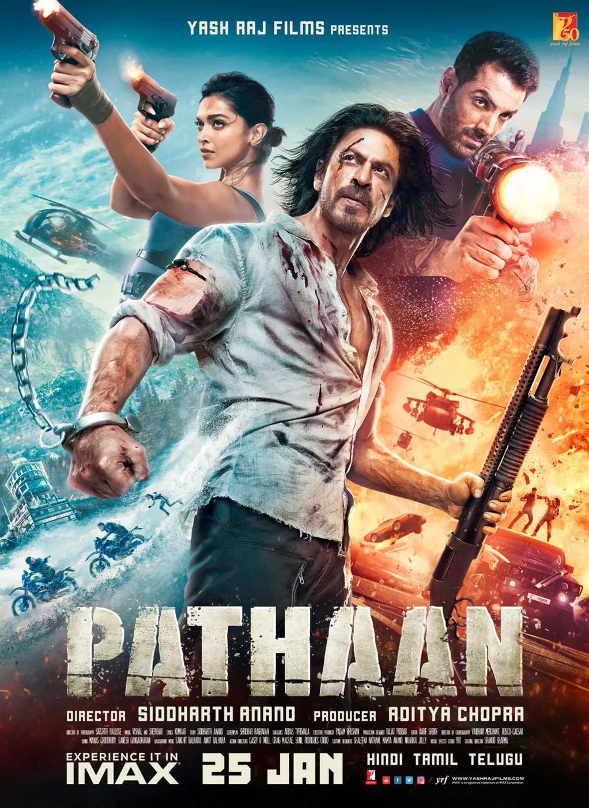
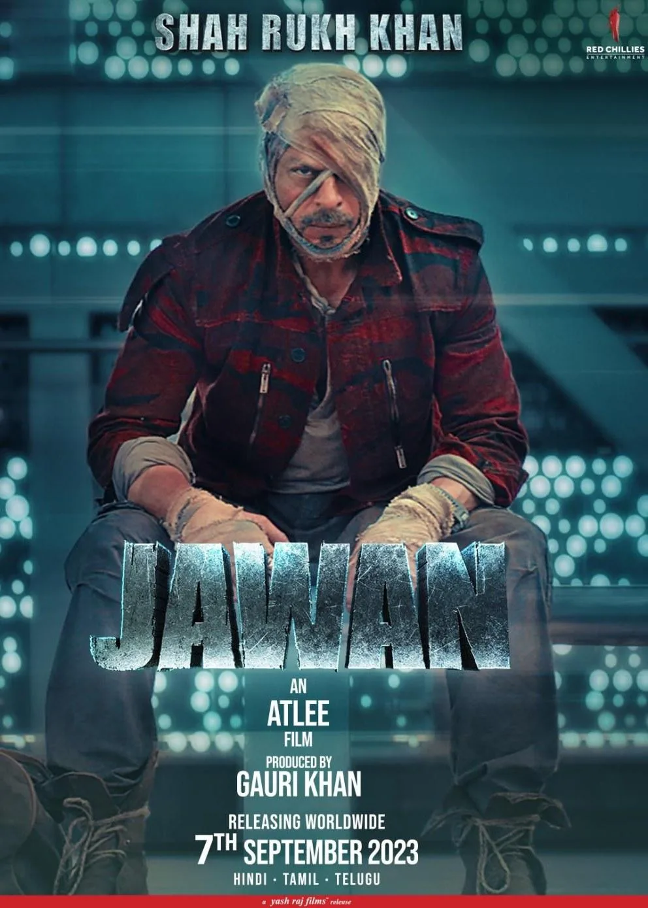
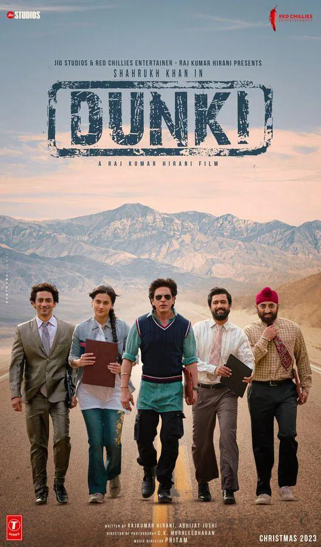

The Final Thesis · section 46 of 92
PART IV — THE RETURN
Chapter 5. Pathaan, Jawan and Dunki: The Cinematic Resurrection of 2023



6
The year 2023 changed the commercial narrative.
After a period away from leading theatrical roles, Shah Rukh Khan returned with three major releases: Pathaan, Jawan, and Dunki.
The result was a remarkable year of box-office performance and renewed brand visibility.
Contemporary industry reporting placed the combined worldwide gross of the three films above ₹2,600 crore. Different trade publications report slightly different totals because of variations in reporting periods, currency conversions, and box-office accounting. The figure should therefore be read as a reported industry estimate, not a single audited financial statement.

Bollywood Hungama
+1
The commercial comeback was accompanied by a distinct approach to public communication.
5.1 Pathaan: The power of controlled visibility
Reporting on the Pathaan campaign described a comparatively restrained approach to conventional media interaction, with direct-to-fan communication and selective public appearances playing prominent roles.
THR India
+1
This approach illustrated a broader shift in celebrity marketing.
A star with a substantial digital audience does not necessarily need to depend on the traditional interview circuit to maintain visibility. Social posts, fan interactions, trailers, public appearances, and earned media can reinforce one another.
The celebrity becomes both the subject and a major distribution channel of the campaign.
However, direct-to-fan communication is not the same as fan ownership of the platform. A celebrity can speak directly to millions of followers while the underlying audience relationship remains mediated by a third-party service.
This is a central strategic distinction.
5.2 Jawan: Brand integration at blockbuster scale
Jawan also illustrated the continuing commercial value of integrating brands into film promotion and the film itself.
Contemporary marketing coverage identified collaborations involving brands such as Zomato, Bondtite, SanDisk, Asian Paints, Astral Pipes, Yezdi, and Just In Time watches. Some integrations were visible in trailers and film-related promotional material.
exchange4media.com
This is evidence of the continued relevance of the brand-partnership model first demonstrated at scale during the Ra.One era.
The difference is that the surrounding digital landscape is now much more developed. Brands have their own creator networks, customer databases, social channels, commerce systems, and performance-marketing operations.
A film partnership can therefore provide more than sponsorship revenue. It can potentially connect multiple audience networks and distribution systems.
But the same analytical question remains: how much of that audience relationship continues after the campaign ends?
5.3 Dunki: Storytelling as a sequence of digital moments
The Dunki promotional campaign used a sequence of content releases known as Dunki Drops, turning the release of promotional material into a continuing narrative.
21st Dec 2023 - YouTube
+1
This is a familiar technique in contemporary entertainment marketing: a film's story is introduced through a succession of moments, each designed to generate attention and anticipation for the next.
The approach creates continuity within the campaign.
The larger opportunity would be to create continuity beyond the campaign — a fan relationship that does not have to restart with each new film.
5.4 Did the digital innovator return?
The answer depends on what is meant by a digital innovator.
If innovation means using digital platforms, generating online attention, coordinating brand partnerships, and communicating directly with fans, then the 2023 campaigns clearly demonstrate the continuing importance of those practices.
If innovation means building a persistent, fan-powered entertainment ecosystem that gives fans tools to create, collaborate, organise, and carry intellectual property into new experiences, the public record cited in this study does not establish that such a system was relaunched at the same scale as the original ambition.
That is not evidence that no work exists behind the scenes.
It is a distinction between a successful marketing campaign and a publicly documented, enduring platform.
The comeback restored the commercial and cultural momentum. The question of what happens to that momentum next remains open.